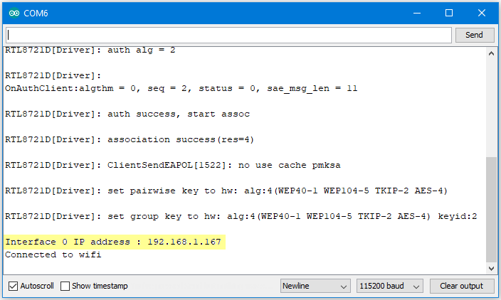

[RTL8722CSM] [RTL8722DM] Approximate UDP Receive Timeout¶
Materials
Ameba x 1
Windows computer connected to same network
Example
This example uses Ameba to receive UDP packets from a computer and calculates the allowed UDP receive timeout setting.
Ameba Preparation
Open the “CalculateUdpReceiveTimeout” example in “File” -> “Examples” -> “AmebaWiFi” -> ” UDP_Calculation ” -> “CalculateUdpReceiveTimeout”.

In the sample code, modify the highlighted section to enter the information required (ssid, password, key index) to connect to your WiFi network.

Upload the code and press the reset button on Ameba once the upload is finished.
Open the serial monitor in Arduino IDE and take note of the IP address assigned to Ameba.
{kind=link}
Computer Preparation
On the computer, Cygwin will be required to compile the code to send the UDP packets. Cygwin can be downloaded from https://www.cygwin.com/
Follow the instructions there to install it. Next, from the “CalculateUdpReceiveTimeout” Arduino example, copy the code from the bottom between “#if 0” and “#endif”, into a new text file, change the hostname to the IP address assigned to Ameba, and rename the file to “UdpReceiveTimeout.cpp”.

Next, open a Cygwin terminal, change the working directory to the location of “UdpReceiveTimeout.cpp”, and use the command “g++ UdpReceiveTimeout.cpp -o UdpTimeout” to compile the code. A file named “UdpTimeout.exe” will be created in the same directory.
Running the Example
Reset the Ameba, wait for the WiFi to connect, and check that the IP address remains the same. On the computer, run the UdpTimeout.exe file, and the computer will begin to send packets continuously to Ameba.
The timeout value is set to 1000ms initially. For each packet received successfully, Ameba decreases the timeout value. The next packet must be received within the timeout period, otherwise Ameba registers a failed packet and increases the timeout value. Open the serial monitor and observe the timeout value converge to a minimum value.